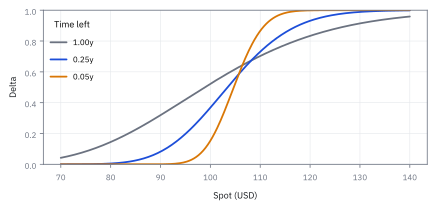
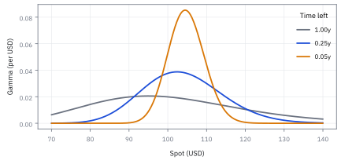
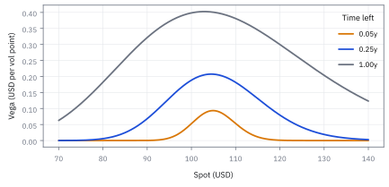
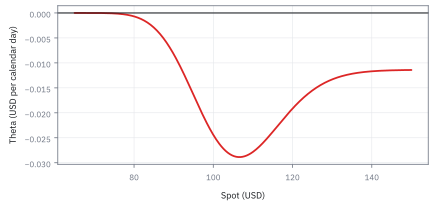

14.3 Estimators, Bias, and Standard Error
แยก bias ที่ทำให้คำตอบเอนไปทางเดิม ออกจากความสั่นของคำตอบ
ข้อมูลรายวันหนึ่งปีของหุ้นตัวหนึ่งให้ผลตอบแทนเฉลี่ย 8% ต่อปี และความผันผวน 20% ต่อปี สองตัวเลขนี้คลาดจากค่าจริงได้ราวเท่าไร และควรส่งตัวไหนเข้า optimizer ตรง ๆ?
เฉลย: ความผันผวนคลาดได้ราว ±0.9 จุด แต่ค่าเฉลี่ยคลาดได้ราว ±20 จุด ช่วง 95% ของค่าเฉลี่ยกว้างตั้งแต่ −31.2% ถึง 47.2% ถ้าย่อค่าเฉลี่ยเข้าหาศูนย์ด้วยตัวคูณ 0.138 ความคลาดรวมลดจาก 20 เหลือราว 7.4 จุด
ตัวเลขที่คำนวณจากข้อมูลเป็นค่าประมาณ ไม่ใช่ความจริง หัวข้อนี้แยกความคลาดสองชนิด คือเล็งเบี้ยวกับมือสั่น ซึ่งแก้คนละวิธี
ศัพท์ที่ใช้ในหัวข้อนี้
- estimator
- สูตรที่รับข้อมูลแล้วให้ตัวเลขออกมา ใช้เป็นสิ่งที่เราตรวจคุณสมบัติ เพราะความเบี้ยวและความแม่นเป็นสมบัติของวิธีการ ไม่ใช่ของตัวเลขตัวเดียว
- estimate
- ตัวเลขที่ได้เมื่อใส่ข้อมูลชุดที่มีลงในสูตร ใช้รายงานและตัดสินใจ ข้อมูลชุดอื่นจะให้ตัวเลขอื่นจากสูตรเดียวกัน
- bias
- ค่าเฉลี่ยของ estimator ถ้าเก็บข้อมูลซ้ำมากครั้ง ลบค่าจริง ใช้วัดการเล็งเบี้ยวที่เก็บข้อมูลเพิ่มแล้วไม่หาย
- variance
- ค่าเฉลี่ยของกำลังสองของระยะห่างจากค่าเฉลี่ย ใช้วัดความสั่นของข้อมูลหรือของ estimator
- standard error (SE)
- standard deviation ของ estimator ใช้บอกว่าตัวเลขที่ได้จะแกว่งแค่ไหนถ้าเก็บข้อมูลใหม่อีกชุด
- mean squared error (MSE)
- ค่าเฉลี่ยของกำลังสองของความคลาดจากค่าจริง รวมทั้งความสั่นและความเบี้ยว ใช้เทียบวิธีที่เบี้ยวนิดแต่นิ่งกว่า กับวิธีที่ไม่เบี้ยวแต่สั่นมาก
- Bessel's correction
- การเอา n − 1 หารผลรวมกำลังสองแทน n เมื่อใช้ค่าเฉลี่ยจากข้อมูลชุดเดียวกัน ใช้แก้ variance ที่ต่ำเกินไปโดยระบบ
- Delta method
- การประมาณความผันผวนของ function ของ estimator ด้วยความชันของ function คูณความผันผวนเดิม ใช้แปลงความแม่นของ variance เป็นความแม่นของ volatility
- shrinkage
- การดึงค่าประมาณที่สั่นมากเข้าหาค่าอ้างอิงที่มีเหตุผล เช่นศูนย์ ใช้ลด MSE และลดการซื้อขายที่เกิดจากตัวเลขสุ่ม
- optimizer
- โปรแกรมที่หาน้ำหนักพอร์ตที่ดีที่สุดจากค่าเฉลี่ยและความเสี่ยงที่ป้อนให้ (หัวข้อ 17.3) ใช้เป็นเหตุผลที่ความคลาดของค่าเฉลี่ยอันตราย
- telescoping sum
- ผลรวมที่พจน์กลางหักกันหมดเหลือแค่ตัวแรกกับตัวสุดท้าย ใช้อธิบายว่าทำไมผลตอบแทนเฉลี่ยขึ้นกับราคาต้นกับราคาปลายเท่านั้น
- covariance matrix
- ตารางของ covariance ทุกคู่สินทรัพย์ ใช้วัดความเสี่ยงรวมของพอร์ต ซึ่งแม่นอยู่ระหว่างค่าเฉลี่ยกับความผันผวน
สัญลักษณ์ที่ใช้ในหัวข้อนี้
| สัญลักษณ์ | ความหมาย | หน่วย |
|---|---|---|
| $r_i$, $x_i$ | ข้อมูลตัวที่ $i$ เช่นผลตอบแทนรายงวด | ทศนิยม/งวด |
| $\mu$, $\hat\mu$ | ค่าเฉลี่ยจริงที่มองไม่เห็น และค่าที่คำนวณได้ หมวกบนหัวแปลว่าเป็นค่าประมาณ | ทศนิยม/ปี |
| $\sigma^2$, $\hat\sigma^2$ | variance จริง และค่าที่คำนวณได้ | ทศนิยม²/งวด |
| $n$ | จำนวนข้อมูล | ตัว |
| $T$ | ความยาวของช่วงข้อมูลเป็นปี ซึ่งไม่เท่ากับ $n$ | ปี |
| $\theta$, $\hat\theta$ | ค่าจริงใด ๆ ที่ต้องการ และ estimator ของมัน | ตามตัวที่ประมาณ |
| $V$ | variance ของ $\hat\mu$ | ทศนิยม²/ปี² |
| $w$, $\tilde\mu$ | ตัวคูณ shrinkage และค่าเฉลี่ยหลังย่อเข้าหาศูนย์ | ไม่มีหน่วย; ทศนิยม/ปี |
| $P_{\rm start}$, $P_{\rm end}$ | ราคาต้นช่วงและปลายช่วง | USD |
ที่มาที่ไป: ตัวเลขที่คำนวณจากข้อมูล ไม่ใช่ความจริง
Ronald Fisher วางกรอบคิดต้นศตวรรษที่ยี่สิบ โดยแยกความผิดพลาดเป็นสองแบบ แบบแรกคือเล็งเบี้ยวไปทางเดิมทุกครั้ง เพิ่มข้อมูลเท่าไรก็ไม่หาย ต้องแก้ที่สูตร แบบที่สองคือเล็งถูกแต่มือสั่น ซึ่งลดได้ด้วยข้อมูลเพิ่ม
ราวปี 1980 Robert Merton ชี้ข้อค้นพบที่ขัดสัญชาตญาณ การเก็บข้อมูลถี่ขึ้นช่วยวัดความผันผวนได้ดีขึ้นมาก แต่แทบไม่ช่วยวัดผลตอบแทนเฉลี่ยเลย ข้อนี้คือเหตุผลที่ optimizer ซึ่งเชื่อทุกตัวเลขเท่ากันให้น้ำหนักพอร์ตแบบสุดโต่ง
ขั้นที่ 1 — สองข้อมูลด้วยมือ: ทำไมต้องหาร n − 1
ลองกับข้อมูลแค่สองตัว จะเห็นว่าทำไมการเอาจำนวนข้อมูลมาหารตรง ๆ ให้ variance ต่ำไป
ค่าเฉลี่ยของสองตัวอยู่ตรงกลางพอดี ระยะห่างจึงเป็นครึ่งหนึ่งของระยะระหว่างสองตัว ผลรวมกำลังสองเฉลี่ยได้ σ² หนึ่งตัว ไม่ใช่สองตัว เพราะค่าเฉลี่ยถูกดึงไปอยู่กลางข้อมูลเสมอ มันกินระยะห่างไปหนึ่งหน่วย หาร 2 ได้ครึ่งเดียวของความจริง หาร 1 ได้พอดี
ขั้นที่ 2 — สามตัวเลขจริง: หาร 3 กับหาร 2 ต่างกันแค่ไหน
ผลตอบแทนสามงวดคือ 1%, 3% และ 8% คำนวณค่าเฉลี่ย ระยะห่าง แล้วลองหารสองแบบ
ระยะห่างจากค่าเฉลี่ยรวมกันเป็นศูนย์เสมอ ตัวสุดท้ายจึงถูกกำหนดโดยสองตัวแรก เหลือแค่สองตัวที่อิสระจริง หาร 2 จึงถูก หาร 3 ได้ variance ต่ำไปหนึ่งในสาม ข้อมูลน้อยยิ่งต่างมาก
ขั้นที่ 3 — กรณีทั่วไป: ทำไมตัวหารเป็น n − 1
เติมและลบค่าจริงหนึ่งครั้ง แล้วแยกผลรวมกำลังสองเป็นส่วนที่วัดจากค่าจริง กับส่วนที่ค่าเฉลี่ยของข้อมูลคลาดจากค่าจริง
พจน์ไขว้ยุบได้เพราะผลรวมของระยะห่างจากค่าจริงเท่ากับ n เท่าของระยะห่างของค่าเฉลี่ย ก้อนแรกเฉลี่ยได้ n σ² ก้อนที่สองคือค่าเฉลี่ยของข้อมูลแกว่งด้วย variance σ²/n ตามหัวข้อ 14.1 ลบกันเหลือ n − 1 พอดี
ขั้นที่ 4 — แยกความคลาดเป็นเล็งเบี้ยวกับมือสั่น
สองบรรทัดแรกเป็นนิยาม เติมและลบค่าเฉลี่ยของ estimator เอง เพื่อแยกความคลาดเป็นส่วนที่สั่นรอบจุดเล็ง กับส่วนที่จุดเล็งเบี้ยวจากเป้า
ค่าเฉลี่ยของระยะห่างจากค่าเฉลี่ยตัวเองเป็นศูนย์เสมอ และความเบี้ยวเป็นเลขคงที่ พจน์ไขว้จึงหายทั้งก้อน เหลือสองส่วนที่แยกกันสนิท มือสั่นแก้ด้วยข้อมูลมากขึ้น เล็งเบี้ยวไม่หายไม่ว่าเก็บข้อมูลกี่ปี
ภาพ 14.3a — bias กับ variance เป็นปัญหาคนละแกน

จุดแต่ละกลุ่มเป็นการยิงซ้ำ กลุ่มซ้ายเล็งกลางแต่กระจาย กลุ่มขวากระจุกแต่เลื่อนจากเป้า estimator ที่ไม่เบี้ยวไม่จำเป็นต้องมี MSE ต่ำที่สุด
ขั้นที่ 5 — ค่าเฉลี่ยกับความผันผวนใช้ข้อมูลคนละแบบ
ผลรวมของ log return รายงวดหักกันเหลือแค่ราคาต้นกับราคาปลาย ความแม่นของค่าเฉลี่ยจึงขึ้นกับความยาวช่วง ส่วนความผันผวนขึ้นกับจำนวนครั้งที่วัด
ซอยหนึ่งปีเป็นรายวันไม่ช่วยค่าเฉลี่ยเลย เพราะข้อมูลที่เพิ่มไม่ได้บอกอะไรใหม่เรื่องราคาต้นกับปลาย แต่ความผันผวนวัดได้แม่นขึ้นตามจำนวนวัน ในหนึ่งปี ความผันผวนแม่นกว่าค่าเฉลี่ยราวยี่สิบเท่า ห้าปีรายวันก็ได้อัตราส่วนราว 0.045 เท่าเดิม
ขั้นที่ 6 — ที่มาของ σ/√(2n): variance ของ variance แล้วถอดราก
สมมติข้อมูลเป็นระฆังและไม่เกี่ยวกัน หา variance ของ σ̂² ก่อน แล้วใช้ Delta method แปลงเป็นความผันผวนของ σ̂
ค่าเฉลี่ยของกำลังสี่ของระฆังมาตรฐานคือ 3 (หัวข้อ 10.5) variance ของกำลังสองจึงเป็น 2 เฉลี่ย n ตัวที่ไม่เกี่ยวกันได้ 2σ⁴/n ขยับ σ̂² นิดเดียว σ̂ ขยับตามความชันของรากที่สอง คือหนึ่งส่วน 2σ กำลังสองของความชันไปตัดกับเลขสองได้ σ²/(2n)
ภาพ 14.3b — mean และความผันผวนไม่คมเท่ากัน

ที่ความผันผวน 20% ต่อปีและข้อมูลหนึ่งปี ความคลาดของค่าเฉลี่ยคือ 20% แต่ถ้ามีข้อมูลรายวัน 252 ตัว ความคลาดของความผันผวนราว 0.891 จุด ระบบคุมความเสี่ยงจึงเชื่อความผันผวนมากกว่าค่าเฉลี่ย
ขั้นที่ 7 — ช่วง 95% ของค่าเฉลี่ย: กว้างกว่าตัวค่าเฉลี่ยหลายเท่า
ใช้ระฆังของหัวข้อ 14.2 กับค่าเฉลี่ย 8% ที่ความคลาด 20% จุดตัด 1.96 ครอบพื้นที่กลาง 95% (หัวข้อ 14.4)
ข้อมูลหนึ่งปีบอกได้แค่ว่าค่าเฉลี่ยจริงอยู่ที่ไหนสักแห่งระหว่างขาดทุน 31% กับกำไร 47% ครึ่งความกว้าง 39.2 จุดใหญ่กว่าตัวค่าเฉลี่ยเกือบห้าเท่า ส่งค่าเฉลี่ยดิบนี้เข้า optimizer ตรง ๆ คือการให้ noise เลือกพอร์ต
ขั้นที่ 8 — ยอมเบี้ยวนิดเพื่อ MSE ที่ต่ำกว่า
ย่อค่าเฉลี่ยเข้าหาศูนย์ด้วยตัวคูณ w ระหว่างศูนย์กับหนึ่ง ฟังดูแย่ลงเพราะสร้างความเบี้ยว แต่ความสั่นลดตามกำลังสองของ w ใช้สูตรของขั้นที่ 4 แล้วหาค่า w ที่ดีที่สุด
ถ้าสัญญาณแรงเทียบกับความสั่น w* เข้าใกล้หนึ่ง แทบไม่ต้องย่อ ถ้าความสั่นใหญ่กว่าสัญญาณมาก w* เข้าใกล้ศูนย์ แปลว่าเดาศูนย์ยังดีกว่าเชื่อข้อมูล ข้อควรระวังคือ w* ใช้ค่าจริงที่เราไม่รู้ ในงานจริงจึงใช้ค่าประมาณหรือค่าอ้างอิงแทน
ขั้นที่ 9 — ตัวเลขของหุ้นตัวนี้: ย่อเหลือ 13.8%
ใช้หน่วย จุด: สัญญาณ 8 จุด ความสั่นของค่าเฉลี่ย 20 จุด คือ V = 400
เชื่อค่าเฉลี่ยดิบคลาดราว 20 จุด ย่อเหลือ 1.10% คลาดราว 7.4 จุด แม้จะเบี้ยวเข้าหาศูนย์ก็ตาม ความเบี้ยวที่เพิ่มมาถูกกว่าความสั่นที่หายไปมาก นี่คือแนวคิดเบื้องหลัง shrinkage ทั้งหมดในหัวข้อ 17.8
ภาพ 14.3c — shrinkage มีจุดต่ำสุดจริง

ในหน่วย จุด ที่ μ = 8 และ V = 400 MSE ต่ำสุดที่ w* = 64/464 = 0.138 การใช้ค่าเฉลี่ยดิบเท่ากับเชื่อข้อมูลเต็มร้อย แม้ความคลาด 20 จุดใหญ่กว่าสัญญาณ 8 จุดมาก
ภาพ 14.3d — divisor $n$ ทำให้ variance ต่ำไป

เมื่อหักค่าเฉลี่ยของข้อมูลเองออกแล้ว การเอา n หารให้ค่าเฉลี่ยเป็น (n − 1)/n เท่าของ σ² ที่ n = 20 ต่ำไป 5% การแก้นี้ไม่ได้ทำให้ข้อมูลชุดเดียวแม่นขึ้น แต่ทำให้สูตรเล็งค่าจริงถูกโดยเฉลี่ย
คำตอบ ตรวจเอง และแปลว่าอะไร
โจทย์ให้อะไรมาบ้าง: ข้อมูลรายวันหนึ่งปี ผลตอบแทนเฉลี่ย 8% ต่อปี ความผันผวน 20% ต่อปี
คำตอบ: ความคลาดของค่าเฉลี่ยราว 20% ช่วง 95% คือ −31.2% ถึง 47.2% ความคลาดของความผันผวนราว 0.89 จุด ย่อค่าเฉลี่ยด้วย 0.138 ได้ 1.10% และความคลาดรวมลดจาก 20 เหลือ 7.43 จุด ข้อมูลรายนาที 98,280 แถวให้ความคลาดของความผันผวนราว 0.045 จุด ถ้าข้อมูลไม่เกี่ยวกันจริง แต่ไม่ช่วยค่าเฉลี่ยเลย
ตรวจเองใน 10 วินาที: 1.96 × 20% = 39.2% และ 64/464 = 0.138
แปลว่าอะไร: ส่งความผันผวนเข้า optimizer ได้ แต่ค่าเฉลี่ยต้องย่อหรือใส่ความไม่แน่นอนก่อน ตัวเลขทศนิยมหลายตำแหน่งจาก optimizer ไม่ได้เพิ่มข้อมูลใดเลย
ข้อตกลงก่อนส่งค่าประมาณเข้าโปรแกรม
| ข้อมูลเข้า | estimator | หน่วย | การคุม |
|---|---|---|---|
| ผลตอบแทนคาดหวัง | $\hat\mu$ หรือค่าที่ย่อแล้ว $\tilde\mu$ | ทศนิยม/ปี | จำกัดขนาด และรายงานความคลาดคู่กันเสมอ |
| ความผันผวน | $\hat\sigma$ | ทศนิยม/ปี | ใช้ทั้งช่วงยาวและช่วงวิกฤต |
| covariance | ตารางจากข้อมูล หรือตารางที่ย่อแล้ว | ทศนิยม²/ปี² | ตรวจว่าความเสี่ยงของทุกพอร์ตไม่ติดลบ |
| น้ำหนักพอร์ต | ผลจาก optimizer | สัดส่วนของพอร์ต | จำกัดการซื้อขาย เงินกู้ และการกระจุกตัว |
อย่าส่งค่าที่ความแม่นต่างกันมากเข้า optimizer โดยไม่มีการคุมความไม่แน่นอน
กับดัก: ไม่เบี้ยวไม่ได้แปลว่าดีที่สุด และ shrinkage ไม่ได้แปลว่าความจริง
Bessel's correction แก้ความเบี้ยวของ variance เมื่อข้อมูลไม่เกี่ยวกัน แต่ไม่ได้แก้ค่าสุดขั้ว ราคาที่ค้าง หรือผลตอบแทนที่ช่วงเวลาซ้อนกัน ส่วน shrinkage ลด MSE เมื่อค่าอ้างอิงสมเหตุผล ถ้าย่อทุกสินทรัพย์เข้าศูนย์ในช่วงที่ส่วนต่างดอกเบี้ยให้ผลตอบแทนชัดเจน ก็สร้างความเบี้ยวใหม่ที่ใหญ่กว่าเดิม
ข้อจำกัด: วิธีนี้สมมติอะไร และของจริงเป็นอย่างไร
| เรื่อง | วิธีนี้สมมติว่า | ของจริงเป็นอย่างไร | ผลที่ตามมาเวลาใช้งาน |
|---|---|---|---|
| การวัดความคลาดเคลื่อน | คำนวณความคลาดเคลื่อนได้ | สูตรมาตรฐานสมมติว่าข้อมูลเป็นอิสระ | ความคลาดเคลื่อนที่รายงานแคบเกินจริงเกือบเสมอ |
| ความเบี้ยว | รู้ว่าเบี้ยวไปทางไหน | ความเบี้ยวจากการเลือกข้อมูลมองไม่เห็น | การเลือกช่วงเวลาที่ผลงานดีทำให้ทุกตัวเลขเบี้ยวโดยไม่มีสูตรใดจับได้ |
| ความคงที่ | ค่าที่แท้จริงไม่เปลี่ยน | มันเปลี่ยน | การเพิ่มข้อมูลไม่ได้ทำให้แม่นขึ้นเสมอไป ถ้าข้อมูลย้อนหลังมาจากคนละยุค |
แถวกลางเป็นความเบี้ยวที่ใหญ่ที่สุดในงานการเงิน และไม่มีสูตรไหนแก้ได้ ต้องแก้ด้วยวิธีทำงาน
แล้วเอาไปใช้ทำอะไรได้จริงบ้าง
ใช้ตัดสินว่าจะเก็บข้อมูลถี่ขึ้นหรือยาวขึ้น เก็บถี่ช่วยวัดความผันผวน เก็บยาวช่วยวัดผลตอบแทนเฉลี่ย ใช้รายงานค่าประมาณพร้อมความคลาดเสมอ และใช้เป็นเหตุผลของการยอมเบี้ยวนิดเพื่อให้นิ่งขึ้นในหัวข้อ 17.8
หัวข้อ 14.4 ต่อจากนี้ด้วยการสื่อสารความไม่แน่นอนโดยตรง สร้างช่วงที่ครอบค่าจริงตามความถี่ที่ประกาศ และอ่านคำว่า 95% confidence ให้ถูก
โค้ดตรวจตัวหาร n − 1, MSE และ shrinkage
import numpy as np
from math import sqrt
x = np.array([1., 3, 8])
assert x.mean() == 4 and list(x - x.mean()) == [-3, -1, 4] and ((x - 4) ** 2).sum() == 26
assert abs(x.var() - 8.67) < 5e-3 and x.var(ddof=1) == 13.0
rng = np.random.default_rng(24)
pairs = rng.normal(0, 2, (400_000, 2)) # sigma^2 = 4, n = 2
assert abs(pairs.var(axis=1).mean() - 2) < 0.03 and abs(pairs.var(axis=1, ddof=1).mean() - 4) < 0.05
est = rng.normal(0.5, 1.0, 100_000) # an estimator of theta = 0.4
assert abs(((est - 0.4) ** 2).mean() - (est.var() + (est.mean() - 0.4) ** 2)) < 1e-9
assert abs(0.20 / sqrt(504) - 0.0089) < 5e-5 and abs(8 - 1.96 * 20 + 31.2) < 1e-9
w = 64 / 464
assert abs(w - 0.138) < 5e-4 and abs(w ** 2 * 400 + (1 - w) ** 2 * 64 - 55.2) < 0.05
assert abs(sqrt(55.2) - 7.43) < 5e-3 and abs(w * 8 - 1.10) < 5e-3
r = rng.normal(0.08 / 252, 0.20 / sqrt(252), (20_000, 252))
sig_hat = r.std(axis=1, ddof=1) * sqrt(252); mu_hat = r.mean(axis=1) * 252
assert abs(sig_hat.std() - 0.0089) < 0.001 and abs(mu_hat.std() - 0.20) < 0.005โค้ดยืนยันว่าหาร n ได้ variance ต่ำไป หาร n − 1 ได้ตรง MSE คือ variance บวก bias กำลังสอง ย่อค่าเฉลี่ยลงเหลือ 13.8% ได้ความคลาด 7.43 จุดแทน 20 จุด และจำลองปีข้อมูลรายวันว่าความผันผวนคลาดแค่ 0.89% แต่ค่าเฉลี่ยคลาดถึง 20%
สรุปที่ใช้ได้จริง
- ความคลาดมีสองชนิด: เล็งเบี้ยวที่ข้อมูลเพิ่มไม่ช่วย กับมือสั่นที่ลดได้ MSE คือผลรวมของ variance กับความเบี้ยวกำลังสอง
- หาร n − 1 เพราะค่าเฉลี่ยของข้อมูลกินระยะห่างไปหนึ่งหน่วย: 1%, 3%, 8% ให้ 13.0 ไม่ใช่ 8.67
- หนึ่งปีรายวันที่ความผันผวน 20%: ค่าเฉลี่ยคลาดราว 20 จุด ความผันผวนคลาดราว 0.89 จุด
- ย่อค่าเฉลี่ย 8% ด้วยตัวคูณ 0.138 ลดความคลาดรวมจาก 20 เหลือ 7.43 จุด